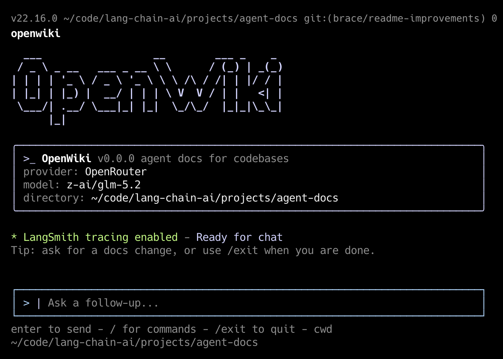

01 · Documentation
Write a map, not a dump
Code mode writes openwiki/ in the repo. Personal mode writes ~/.openwiki/wiki. Both start at quickstart.md.
OpenWiki field guide
docs · staleness · agents
How this product actually works
OpenWiki is not a chat wrapper around a docs folder. It is a two-mode writer that generates a wiki, refuses to rewrite it unless source evidence moved, and plants a stable pointer so coding agents land in that wiki instead of the raw tree.

01 · Documentation
Code mode writes openwiki/ in the repo. Personal mode writes ~/.openwiki/wiki. Both start at quickstart.md.
02 · Staleness
Skip the model if git did not move. If it runs, edit surgically. If the wiki hash is unchanged, do not bump .last-update.json.
03 · Agentic help
AGENTS.md / CLAUDE.md get an OpenWiki block. The wiki agent is docs-only and is told not to touch those files.
One binary, two wikis
The same agent runtime branches on outputMode. Mixing them is the most common confusion: a repo’s openwiki/ is generated code docs; the canonical personal brain is always under home.
Documentation contract
Init builds a first-pass map. Updates are maintenance. The prompt forbids thin stub directories, inventing APIs, and documenting every file. Humans and future agents share the same entrypoint.
| Surface | Who writes it | Job | Do not |
|---|---|---|---|
| quickstart.md | Agent, every init | Entrypoint: what this is, where to go next | Become a file inventory |
| architecture/, agent/, … | Agent, as needed | Real domains with “what / why / watch / sources” | One-file stub folders |
| best-practices.md | Code-mode agent | Used-in-this-repo inventory + tags for rule tooling | Restate public language lore |
| themes / questions / commitments | Personal-mode agent | Durable memory graph over connector dumps | Paste newsletters, receipts, source TODOs |
| _plan.md | Agent, mid-run | Temporary page list + evidence; deleted before finish | Leave it in the wiki |
| .last-update.json | Host runtime, after run | Anchor the next git/time window | Count as wiki content (excluded from hash) |
Staleness
Scheduled CI is cheap only if most runs do nothing. OpenWiki therefore tries to spend zero tokens when the repo is quiet, few edits when a handful of files moved, and no metadata churn when the model looked and left the wiki alone.
| Condition | Skip agent? | Why |
|---|---|---|
| User passed an extra update message | run | shouldCheckUpdateNoop is false |
| No previous gitHead | run | Cannot bound the change window |
| Dirty worktree (except metadata file) | run | Uncommitted source may be undocumented |
| HEAD moved, and some path is outside openwiki/ | run | Source (or other) files changed |
| HEAD same, worktree clean | skip | Nothing to refresh |
| HEAD moved, but every changed path is under openwiki/ | skip | Avoid looping on wiki-only commits (the CI PR itself) |
Agentic help
OpenWiki splits labor: the documentation agent writes the wiki; the CLI host writes the instruction files that other agents actually load. That split is load-bearing. If the wiki agent could rewrite AGENTS.md, it would fight whatever else you keep there.
If the file exists, only the OPENWIKI:START…END span is replaced. Your other rules stay. Missing files are created.
Each page should say where to start, what breaks, which tests matter. Source maps are optional. Canonical homes beat copy-paste.
best-practices.md is tagged (language, archetype, libs, module) so external rule packs can attach without guessing the stack.
Evidence in source
Claims above are from these implementations, not from the generated wiki. The wiki in this repo is itself an OpenWiki output and can lag the prompt.
src/agent/utils.ts — skip the model when git has not produced a source change since the last recorded head.
src/agent/index.ts — hash the wiki before and after; write metadata only on a real content change.
src/code-mode.ts — host plants the agent pointer without letting the wiki agent own AGENTS.md.
Code vs personal
| Code / repository | Personal / local wiki | |
|---|---|---|
| Root | ./openwiki/ | ~/.openwiki/wiki/ |
| Evidence | Git since last head | Connector raw dumps + source pages |
| Skip-the-model gate | Yes, git noop | No equivalent git skip |
| Stale vocabulary | Surgical page edits, allowed no-op | Open questions → Stale; themes last-seen |
| Agent files | Host writes AGENTS.md + CLAUDE.md | Explicitly does not manage those |
| Write fence | docs-only: /openwiki only | wiki root; connectors via tools |
| Automation | GitHub/GitLab PR of openwiki + pointers | launchd crons + ingest all/one source |
Things that drift